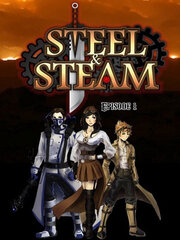

Steel & Steam: Episode 1
Steel & Steam: Episode 1
Detalles
|  | |
| Tiempo de juego | No Jugado |
| Última actividad | Nunca |
| Añadido | 23/07/2021 17:30:20 |
| Modificado | Nunca |
| Estado de finalización | Not Played |
| Librería | Steam |
| Fuente | Steam |
| Plataforma | PC (Windows) |
| Fecha de lanzamiento | 16/07/2014 |
| Puntuación de la Comunidad | 37 |
| Puntuación de la Crítica | 80 |
| Puntuación de usuario | |
| Género | RPG |
| Desarrollador | Red Meat Games |
| Editor | Digerati Distribution |
| Característica | Single Player |
| Enlaces | Community Hub Discussions Guides News Store Page PCGamingWiki |
| Tag | |
Descripción
Steel & Steam is a Jrpg Fantasy Steampunk Adventure!
The desert plague is spreading from the East: a reminder of a destructive past.
Man has evolved since the wars of old, creating new ways to combat this deadly expanse.
Using Steel and Steam, man fights this terror, as well as the monsters that spawn from its touch.
Now covering half the continent of Terra Corpus, the desert’s slow and steady hunger is threatening to consume and corrupt all life in the world.
Some of the desperate seek out legends of the past: elemental guardians said to sleep inside the planet. Once resurrected, these powerful beings can be controlled, and guided to stop the desert.
The legends speak of a chosen few who have the ability to tame these elemental beings and reshape the world.
Our story Begins With One Such Person.
Steel & Steam takes the best elements from the fantasy JRPG’s of old, such as great stories, awesome characters, and classic monsters, and combines them with a touch of steampunk. It’s like taking Lord of the Rings and mixing in the Wild West.
It’s a game where you, the player, decide how to interact with the game. The classic games usually had a linear, player-focused story moving the game forward. Steel & Steam follows this model, but also gives you the option of moving the story forward through multiple, intertwined story lines. Any character you meet has the potential to affect the end. Will you or will you not save the world? Who you interact with, and how, will affect the way the ending is played out. Whatever happens in one city or town can affect another. These choices give additional life to the world of Steel & Steam.
Who Are the Main Heroes Of Steel & Steam?
Noah Phoenix, age 19, 5’10, 170 lbs. Favourite weapons: sword, axe or pistol. Protective wear: shirts, light, medium and heavy coats. Noah is an adventure junky; he likes to jump in feet first, while searching for the next mystery around the corner. After a short stint with the Silver Head City Guard, Noah decided to move on as a freelancer. Without Alyssa to watch his back, he probably would have already bitten off more than he could chew.
Alyssa Noble, age 21, 6’3, 180 lbs. Favourite weapons: fists, clubs or rifles. Protective wear: shirts, light, medium, and heavy corsets. Alyssa grew up learning how to fight by protecting her father’s caravans. She likes to step back and assess the situation, before laying it out cold with a good punch. Noah’s best friend and protector, she believes that if she wasn't around to watch Noah’s back, he would have been killed long ago.
Here is an idea of some of the things you can expect from Steel & Steam:
- A PC release: The game will be released for PC.
- A huge world to explore: The game is being designed as an immersive fantasy world. Cities and towns will be full of people and buildings to engage with, with story lines that characters can choose to follow regarding the history and current state of affairs that affect the day to day lives of the people who live here.
- An engaging story: An episodic story that involves two main heroes, with an epic conclusion.
- Choose your story: You have the chance to complete side missions that change how you interact with the world of Steel & Steam. From changes to the characters you meet, all the way down to changes in the very landscapes you encounter, the side missions provide extra depth that unlocks new stories and opportunities to earn experience without the grind.
- Retro style gaming at its finest: Remember the glory days when games told epic stories? Steel & Steam is a retro RPG similar to the classic RPG games played on the Sega Genesis, NES and SNES systems. Relive the past, relish the future, and revel in the now.
- A little side fun: Want to take a break from saving the world? Then you can also play some mini games, such as fishing or arena gambling
- An Original Soundtrack